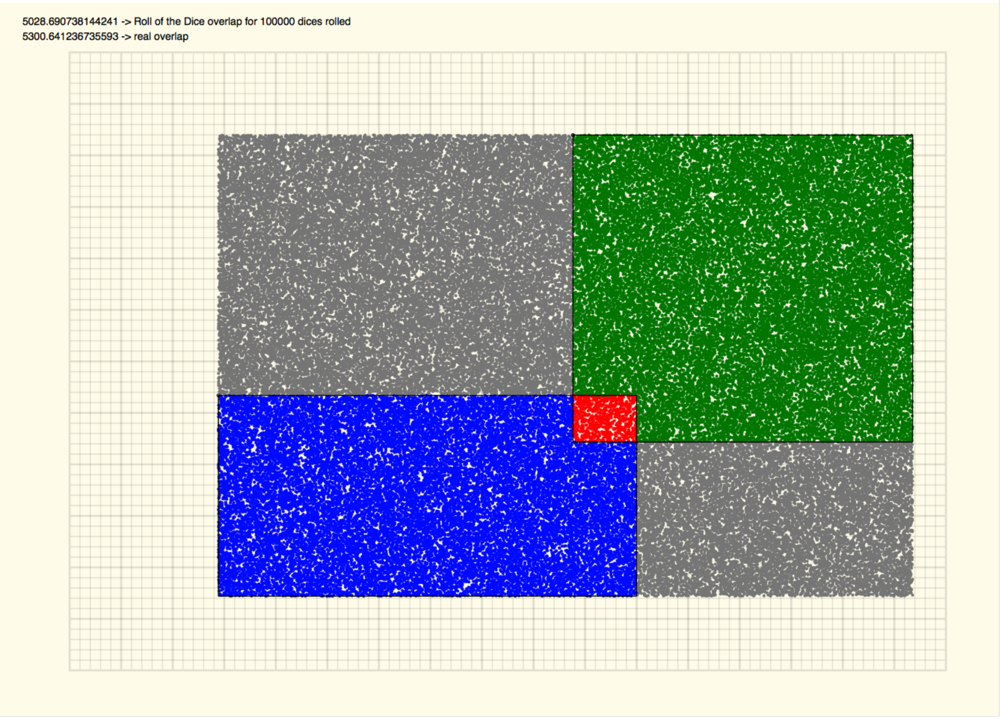

Back to Randomise USR 0 home
Calculate the overlap area of two rectangles
2018-03-19
Calculating the overlap area of two rectangles is straightforward but interesting geometry problem.
I took a different approach by using a Monte Carlo simulation to calculate the overlap area.
Basically, select a rectangle that includes the two rectangles (our big rectangle). Throw a number of random points in that rectangle and count how many fall inside the two rectangles. Multiply the percentage of points that fall in the two rectangles by the area of the 'big' rectangle, and you have a good approximation of the real overlap area.
The higher the number of points you throw, the closest you will get to the correct area.
Check the animated ovelap calculations here.
It will generate random rectangles in my favorite graphing paper and then iterate through a different number of points thrown to calculate the overlap area. It loops forever providing infinite Mondrian pictures.
